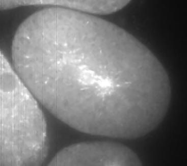

Why motion matters during the first division
The experimental movies in this project show Caenorhabditis elegans embryos during their first cell division. This small worm provides a way to study how a cell controls where it divides. Its first division produces two cells with different sizes and developmental roles.
The spindle—the structure that separates chromosomes—must be positioned correctly. Microtubules extend from its poles toward the cell's outer layer, called the cortex. Dynein, a molecular motor, helps generate pulling forces there. Differences in these forces contribute to the spindle moving toward the posterior side of the embryo. Research background.
In our collaborative 2018 study of cortical dynein, tracking revealed directed and diffusive-like motion. Diffusive-like cortical events were associated with force generation, and their frequency helped explain the force imbalance. Those conclusions relied on experiments and biological controls, beyond simply assigning a motion label.
This portfolio entry presents my separate machine-learning workflow for classifying motion. The paper documents the original imaging and simulation approach. Its published motion classification used trajectory asymmetry; the machine-learning comparison below is a later workflow, not the classifier used to produce the paper's results.
The difficulty: no known answers for the real tracks
A moving spot does not arrive with a reliable label telling us whether its motion is diffusion or directed motion. Short tracks, image background, and uncertainty in locating spots make visual judgement difficult. Without trusted experimental labels, we cannot train and measure a supervised classifier directly on the real recordings.
My approach was to generate synthetic microscopy images with known motion, designed to resemble the experimental conditions. The simulated motion supplies the labels: D for diffusion and DM for directed motion. We can then detect and track the simulated spots, calculate their measurements, and train a model using those labelled tracks.
This puts the image-to-track measurement step inside the procedure. The model learns from measurements obtained after tracking simulated images, rather than receiving perfect coordinates alone. Finally, the same kind of measurements from experimental tracks are passed to the trained model.
How we made realistic synthetic images
Supplemental Text 2.5 and Table S2 document the procedure. We simulated two-dimensional diffusion, with added drift for directed motion. Lifetimes followed an exponential distribution. Spot brightness resembled the experiment, Gaussian blur represented microscope optics, and Gaussian pixel noise plus fast-diffusing particles created background.
The documented examples contain 100 frames over 20 seconds, sampled every 0.2 seconds. Table S2 lists a Gaussian optical width of 0.3 µm, particle diffusion of 0.002 µm²/s, and drift components of 0.4 µm/s. Movies S8 and S9 use a signal-to-noise ratio of 5 and mean lifetime of 10 seconds.
The published procedure applied CANDLE denoising, Laplacian-of-Gaussian enhancement, and u-track linking before asymmetry-based classification. Figure S3 compared recovered positions, classes, speeds, and durations with simulation truth across noise levels. This tests the complete measurement procedure. The later Python repository instead compares supervised models using seven track measurements.
The paper also reports that short directed tracks can appear diffusive-like. Track duration therefore matters when interpreting experimental predictions. Published parameters describe the research simulation; they are not assumed to be verified settings for every archived TIFF or row in the machine-learning tables.
Watch synthetic and real microscopy
These are original supplementary movies from our 2018 paper, downloaded through the Europe PMC archive and republished with attribution under the paper's CC BY-NC-SA 3.0 licence. Movie files are unchanged. Poster frames were extracted one second into each published movie, with no added contrast adjustment.


Additional original Dropbox image previews
These archived previews supplement the published movies. Exact frame indices and calibration are unavailable. Brightness adjustments below affect browser display only.
movienonoise4.tif: display brightness 12×. Matching-name tracking export exists; individual training-row correspondence unverified.movienoisediffuback4.tif: display brightness 8×. Exact archived settings unverified.
Stream-4candledeno.avi. C. elegans first-division context confirmed by the experimenter; marker and plane not inferred from filename.The original Dropbox AVI/TIFF downloads remain incomplete. The three full movies above were successfully recovered from the published supplementary archive. Their exact correspondence to rows in the recovered classifier tables has not been established.
From images to motion labels
- Simulate images. Create known diffusive and directed motion under conditions intended to resemble the experiment.
- Detect and track spots. Export the trajectories. The archive includes TrackMate XML files.
- Measure each track. The original MATLAB stage calculates net displacement, efficiency, straightness, asymmetry, bending, skewness, and kurtosis. The recovered feature routine retains its original author attribution.
- Train and compare models. Python compares logistic regression and random forests. Missing-value handling and scaling are fitted inside cross-validation.
- Evaluate on held-out synthetic tracks. Their known labels allow a meaningful comparison between expected and predicted motion.
- Apply the fitted model to real tracks. Use the same seven measurements and fitted preprocessing. Save predictions separately from known labels.
The organised portfolio branch preserves this method: original notebook, MATLAB feature calculation, Python training functions, labelled synthetic tables, and real-data tables. The original simulation generator has not yet been recovered into this branch.
Code that keeps the distinction clear
The model uses seven track measurements. Keeping one shared list makes training and real-data prediction use the same inputs:
FEATURES = [
'netDisp', 'efficiency', 'straightness', 'Asym',
'bending', 'pointSkew', 'pointKurt',
]For experimental data, the output column explicitly says prediction. The original D_DM column is a placeholder and must not be treated as ground truth:
def predict_real_tracks(model, data):
# D_DM in the original real tables is a placeholder, not ground truth.
result = data.copy()
result['predicted_motion'] = model.predict(data[FEATURES])
return resultRead the executed notebook, model comparison, and original MATLAB measurements.
What the results actually establish
The rerun of the organised notebook uses the recovered 985-track synthetic training table. Its original random 80/20 split leaves 197 tracks for testing. The selected model classified 190 of 197 correctly, or 96.45%. This result concerns held-out synthetic tracks only.
The split is by track, not by source movie. It therefore does not establish performance on an unseen movie. Applying the fitted model to 193 usable real cortex tracks produced 88 D and 105 DM predictions. Those counts describe model output; without trusted experimental labels, they do not measure real-data accuracy.
The key assumption is that synthetic images capture enough of the experimental conditions for their learned motion patterns to transfer. Differences in background, spot visibility, localisation, and track duration can affect that transfer. Known synthetic labels help test the method; biological controls and labelled experimental examples are needed to establish what its real predictions mean.
This project shows how I connect an experimental question to image simulation, tracking, numerical measurements, and a reproducible learning workflow. The original research predates ChatGPT: the worms were dividing while we were still dividing our time between microscopes and MATLAB.
Research and source material
- 2018 supplementary methods: Text 2.1–2.5, Table S2, and Figure S3.
- Tracks Classification: organised code and data, including methodology, data provenance, and validation notes.
- Downloaded source previews and their provenance.
- Rodriguez-Garcia, Chesneau et al. (2018), The polarity-induced force imbalance in Caenorhabditis elegans embryos is caused by asymmetric binding rates of dynein to the cortex. Collaborative research and biological context.
- Background study (2011), Visualization of dynein-dependent microtubule gliding at the cell cortex: implications for spindle positioning. Background on motion, microtubules, and spindle positioning.